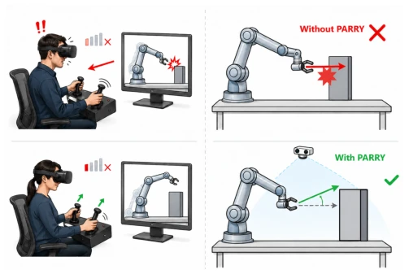
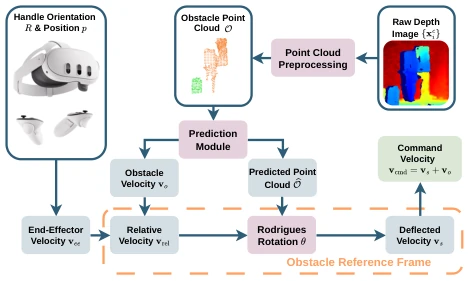
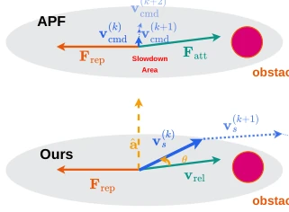
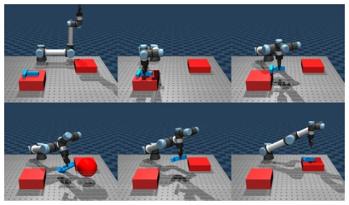
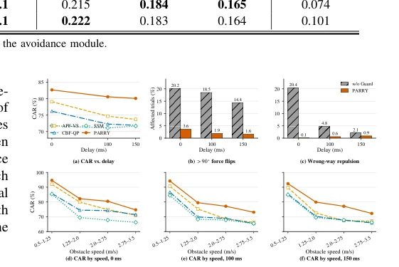
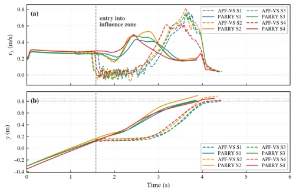
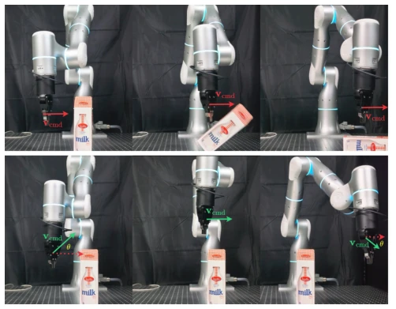

This paper adds a "sharp turn" feature to teleoperation. Traditional APF easily causes the manipulator to "stall" before obstacles; PARRY uses a rotational velocity vector instead of superimposed repulsive force, preserving speed magnitude, solving the stalling problem caused by local minima. However, it only protects the end-effector, not the whole manipulator, which may still require human visual intervention in narrow spaces. Latency compensation is performed quite well, but the prediction module relies on the most dangerous point; if multiple obstacles approach simultaneously, will this single-point prediction fail to address all? Additionally, it only processes point clouds, and the perception robustness for textureless or reflective objects is not discussed in depth. Overall, it is a lightweight, plug-and-play safety patch, suitable for scenarios with high real-time requirements, but do not expect it to replace complex planners.
In teleoperation, operators are prone to colliding with dynamic obstacles due to network latency or distraction [1]. Existing safety assistance mechanisms each have shortcomings: Artificial Potential Field (APF) easily falls into local minima causing velocity stagnation [12], Virtual Fixture (VF) relies on preset environments lacking robustness [7], Control Barrier Function (CBF) has high computational overhead and requires smooth representation [9]. Especially in non-static environments, perception and processing latency lead to prediction failure. The authors point out that traditional APF causes the manipulator to "stall" when the net force approaches zero; operators may misjudge it as hardware failure and press the joystick randomly, instead increasing the risk. Therefore, a lightweight, latency-compensating, and stalling-avoiding active obstacle avoidance scheme is needed.

Fig. 1. Illustration of PARRY in teleoperation. Prompt: A 2x2 scientific illustration. Top row: Male VR operator faces network lag, causing a robotic arm to crash into a grey pillar (red explosion). Bottom row: Female VR operator works smoothly, robotic arm uses overhead camera vision to deflect its path along a green curve, successfully avoiding the pillar.
The PARRY framework runs at the velocity command layer, as an independent safety module superimposed on the bottom tracking controller. First, preprocess the depth camera point cloud, utilizing voxel downsampling and robot self-occlusion filtering to extract obstacle point clouds. The core innovation lies in prediction and steering: 1) Adaptive prediction of future point clouds based on TTC (Time-to-Collision), compensating for perception latency, and adding "overshoot protection" to prevent prediction points from crossing the end-effector and generating reverse repulsive force, ensuring prediction points are always in front of the end-effector. 2) Calculate relative velocity, use the Rodrigues rotation formula to rotate the relative velocity vector around the repulsive force direction, rather than directly superimposing force. This preserves the velocity magnitude, avoiding stalling caused by attraction and repulsion cancellation in APF, ensuring the manipulator always has a motion trend. Finally, convert the rotated relative velocity back to the base coordinate system to generate commands. The whole process is computationally lightweight, meeting high-frequency control requirements, and does not rely on complex optimization solvers.

Fig. 2. Overall architecture of PARRY.

Fig. 3. Comparison between APF velocity superposition and PARRY relative-velocity redirection.
In MuJoCo simulation, the UR5e manipulator executes pick-and-place tasks, introducing dynamic sphere obstacles. Comparison baselines include APF-VS, CBF-QP, and SSM. Under 0-150ms latency, PARRY's Collision Avoidance Rate (CAR) is highest, and computation time is only 0.101ms, far lower than CBF-QP's 0.729ms. Ablation experiments show that TTC prediction and relative velocity rotation are key; removing prediction leads to increased latency sensitivity. Physical experiments use a 7-DoF Flexiv Rizon 4, successfully completing stacking cup tasks under static and dynamic obstacles. Results indicate that the method, while maintaining high safety, is significantly superior to traditional potential field methods, and is insensitive to latency, validating its feasibility in real environments.

Fig. 4. In the MuJoCo simulation, PARRY redirects the end effector around a dynamic spherical obstacle while completing the transport task.

Fig. 5. Monte Carlo evaluation (a) CAR under increasing obstacle- observation delay. (b) Percentage of trials containing at least one repulsive- force direction change greater than 90◦between consecutive valid frames. (c) Percentage of trials containing at least one wrong-way frame, in which the obstacle is approaching while the repulsive force points toward it. Panels (b) and (c) compare PARRY with and without the overshoot guard. (d)–(f) CAR stratified by obstacle speed at 0, 100, and 150 ms, respectively.

Fig. 6. End-effector forward velocity vy and position y for APF-VS (dashed) and PARRY (solid) under four symmetric configurations.

Fig. 7. Static obstacle scenario. Top: Baseline collision. Bottom: PARRY successfully steers around the obstacle in real time.